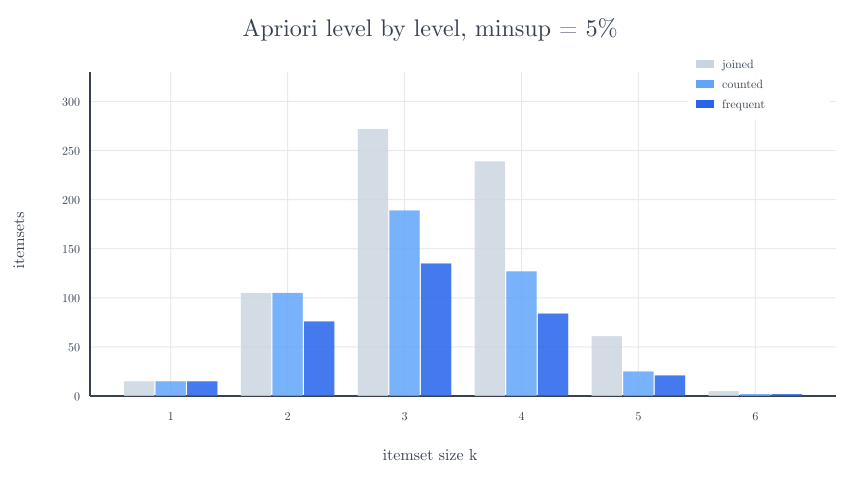
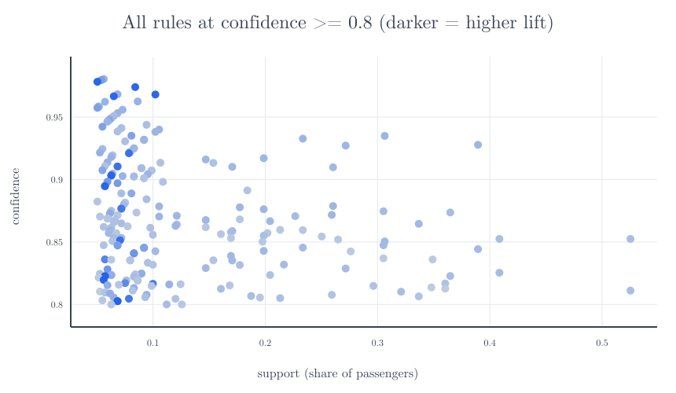

The Apriori Algorithm: Mining Frequent Itemsets and Association Rules
Abstract
Frequent-itemset mining finds every combination of items that occurs in at least
a minimum number of records. Association rules turn these combinations into
statements such as "first-class women survived". Apriori (Agrawal &
Srikant, 1994) makes the search feasible with one fact: every subset of a
frequent set is frequent. We prove this, and prove that Apriori's prefix join
generates every frequent set, so the pruning loses nothing. We then mine the 891
Titanic passengers in dm::datasets::titanic(), each described by class, sex,
age group, family, port and survival. At a minimum support of 5%, Apriori counts
463 candidate itemsets and finds 333 frequent ones. Eclat and FP-growth return
the same 333 sets. The strongest rule is \(\{\)first class,
female\(\}\Rightarrow\) survived, with confidence 0.968 and lift 2.52. All 53
rules about survival with confidence at least 0.8 pass Fisher's exact test after
Benjamini-Hochberg correction. Only 17 of them beat every shorter rule by at
least 0.02 in confidence.
The data: 891 passengers as transactions
dm::datasets::titanic() lists 891 passengers of the Titanic with their ticket
class, sex, age, relatives aboard, port of embarkation and whether they
survived. To mine it, each passenger becomes a transaction: a set of items of
the form column=value. Age is grouped into child (under 18), adult and unknown
(177 passengers have no recorded age). Family is "with" if the passenger
travelled with any sibling, spouse, parent or child.
algorithms::encode_transactions turns the chosen columns into item sets.
#include <dm/dm.hpp>
namespace alg = dm::algorithms;
int main() {
const auto passengers =
dm::datasets::titanic() | dm::mutate("Survived", [](const auto &r) {
return std::string(r.get_double("Survived") > 0 ? "yes" : "no");
}) | dm::mutate("Age", [](const auto &r) {
return std::string(r.is_null("Age") ? "unknown"
: r.get_double("Age") < 18 ? "child" : "adult");
}) | dm::mutate("Family", [](const auto &r) {
return std::string(r.get_double("SibSp") + r.get_double("Parch") > 0
? "with" : "alone");
});
std::print("{}\n",
passengers |
dm::select({"Name", "Pclass", "Sex", "Age", "Family", "Embarked",
"Survived"}) | dm::slice_head(4) | dm::to_md());
const auto enc =
alg::encode_transactions(passengers,
{"Pclass", "Sex", "Age", "Family", "Embarked",
"Survived"});
const auto singles = alg::apriori_frequent_itemsets(enc.transactions, 1);
std::print("\n{} transactions, {} distinct items.\n\n| item | support | share |\n| :--- | ---: | ---: |\n",
enc.transactions.size(), enc.labels.size());
std::vector<std::pair<std::string, std::size_t>> items;
for (const auto &f : singles)
if (f.items.size() == 1)
items.emplace_back(enc.labels[f.items[0]], f.support);
std::ranges::sort(items);
for (const auto & [label, count] : items)
std::print("| {} | {} | {:.1f}% |\n", label, count,
100.0 * count / enc.transactions.size());
}| Name | Pclass | Sex | Age | Family | Embarked | Survived |
|---|---|---|---|---|---|---|
| Braund, Mr. Owen Harris | 3 | male | adult | with | S | no |
| Cumings, Mrs. John Bradley (Florence Briggs Thayer) | 1 | female | adult | with | C | yes |
| Heikkinen, Miss. Laina | 3 | female | adult | alone | S | yes |
| Futrelle, Mrs. Jacques Heath (Lily May Peel) | 1 | female | adult | with | S | yes |
891 transactions, 15 distinct items.
| item | support | share |
|---|---|---|
| Age=adult | 601 | 67.5% |
| Age=child | 113 | 12.7% |
| Age=unknown | 177 | 19.9% |
| Embarked=C | 168 | 18.9% |
| Embarked=Q | 77 | 8.6% |
| Embarked=S | 644 | 72.3% |
| Family=alone | 537 | 60.3% |
| Family=with | 354 | 39.7% |
| Pclass=1 | 216 | 24.2% |
| Pclass=2 | 184 | 20.7% |
| Pclass=3 | 491 | 55.1% |
| Sex=female | 314 | 35.2% |
| Sex=male | 577 | 64.8% |
| Survived=no | 549 | 61.6% |
| Survived=yes | 342 | 38.4% |
Two embarkation records are missing, so those two passengers carry five items instead of six. Survival is the item of most interest: 342 of the 891 survived (38.4%).
The method
Support, confidence and lift
For a database of \(N\) transactions, the support \(s(I)\) of an itemset \(I\) is the number of transactions that contain every item of \(I\). The itemset is frequent if \(s(I)\ge\text{minsup}\). A rule \(A\Rightarrow C\), with \(A\) and \(C\) disjoint, is scored by
Confidence is a conditional probability. Lift compares it with the base rate of \(C\): lift 1 means \(A\) tells us nothing about \(C\).
Downward closure
*Lemma.* If \(J\subseteq I\) then \(s(J)\ge s(I)\).
Proof. Every transaction that contains all of \(I\) contains all of \(J\). \(\square\)
So support can only fall as an itemset grows. If any subset of a candidate is infrequent, the candidate is infrequent and need not be counted. Apriori searches level by level. Let \(L_k\) be the frequent \(k\)-itemsets, with items kept in sorted order:
- Count every single item to get \(L_1\).
- Join: for each pair \(X,Y\in L_k\) that agree on their first \(k-1\) items and have \(x_k<y_k\), form \(X\cup\{y_k\}\).
- Prune: drop any joined candidate that has a \(k\)-subset outside \(L_k\).
- Count the survivors in one pass over the database. The frequent ones form \(L_{k+1}\). Stop when \(L_{k+1}\) is empty.
Why the join misses nothing
*Claim.* Every frequent \((k+1)\)-itemset is produced by the join.
Proof. Let \(Z=\{z_1<\dots<z_{k+1}\}\) be frequent. Remove its last item to get \(X=\{z_1,\dots,z_k\}\), and remove its second-to-last item to get \(Y=\{z_1,\dots,z_{k-1},z_{k+1}\}\). Both are subsets of \(Z\), so both are frequent by the lemma and lie in \(L_k\). They agree on their first \(k-1\) items, and \(z_k<z_{k+1}\). So the join forms \(X\cup\{z_{k+1}\}=Z\). All \(k\)-subsets of \(Z\) are frequent, so the prune step keeps it, and the count confirms it. \(\square\)
The join also never forms the same candidate twice, because \(Z\) determines \(X\) and \(Y\). Apriori therefore finds every frequent itemset and only counts candidates whose every subset is frequent. Eclat and FP-growth, in the same header, compute the same collection by intersecting transaction-id lists and by growing a prefix tree. They make a useful cross-check.
Mining the passengers
The next block runs Apriori at three minimum supports: 5%, 10% and 20% of the
passengers, which is 45, 89 and 178. apriori_levels reports, for each itemset
size, how many candidates the join produced, how many survived the prune and
were counted, and how many were frequent.
#include <dm/dm.hpp>
namespace alg = dm::algorithms;
int main() {
std::filesystem::create_directories("build");
const auto passengers =
dm::datasets::titanic() | dm::mutate("Survived", [](const auto &r) {
return std::string(r.get_double("Survived") > 0 ? "yes" : "no");
}) | dm::mutate("Age", [](const auto &r) {
return std::string(r.is_null("Age") ? "unknown"
: r.get_double("Age") < 18 ? "child" : "adult");
}) | dm::mutate("Family", [](const auto &r) {
return std::string(r.get_double("SibSp") + r.get_double("Parch") > 0
? "with" : "alone");
});
const auto enc =
alg::encode_transactions(passengers,
{"Pclass", "Sex", "Age", "Family", "Embarked",
"Survived"});
const auto &tx = enc.transactions;
std::print("| minsup | k | joined | counted | frequent |\n| ---: | ---: | ---: | ---: | ---: |\n");
std::vector<double> ks, joined, counted, frequent;
for (std::size_t minsup : {45, 89, 178}) {
std::size_t total_counted = 0, total_frequent = 0;
for (const auto &l : alg::apriori_levels(tx, minsup)) {
std::print("| {} | {} | {} | {} | {} |\n", minsup, l.k, l.joined,
l.candidates, l.frequent);
total_counted += l.candidates;
total_frequent += l.frequent;
if (minsup == 45) {
ks.push_back(l.k);
joined.push_back(l.joined);
counted.push_back(l.candidates);
frequent.push_back(l.frequent);
}
}
const auto a = alg::apriori_frequent_itemsets(tx, minsup);
const bool same =
a.size() == alg::eclat_frequent_itemsets(tx, minsup).size() &&
a.size() == alg::fp_growth_frequent_itemsets(tx, minsup).size();
std::print("| {} | total | | {} | {} (Eclat and FP-growth agree: {}) |\n",
minsup, total_counted, total_frequent, same ? "yes" : "no");
}
std::vector<double> kj, kc, kf;
for (double k : ks) {
kj.push_back(k - 0.27);
kc.push_back(k);
kf.push_back(k + 0.27);
}
dm::graphics::RPlot::create().bars(kj, joined, "joined",
dm::RGB{203, 213, 225}, 0.26).bars(
kc, counted, "counted", dm::RGB{96, 165, 250}, 0.26).bars(
kf, frequent, "frequent", dm::RGB{37, 99, 235}, 0.26).y_limits(0, 330).title("Apriori level by level, minsup = 5%").x_label("itemset size k").y_label("itemsets").size(860, 480).save_svg("build/apriori_levels.svg");
}| minsup | k | joined | counted | frequent |
|---|---|---|---|---|
| 45 | 1 | 15 | 15 | 15 |
| 45 | 2 | 105 | 105 | 76 |
| 45 | 3 | 272 | 189 | 135 |
| 45 | 4 | 239 | 127 | 84 |
| 45 | 5 | 61 | 25 | 21 |
| 45 | 6 | 5 | 2 | 2 |
| 45 | total | 463 | 333 (Eclat and FP-growth agree: yes) | |
| 89 | 1 | 15 | 15 | 14 |
| 89 | 2 | 91 | 91 | 53 |
| 89 | 3 | 161 | 100 | 57 |
| 89 | 4 | 62 | 32 | 20 |
| 89 | 5 | 6 | 6 | 6 |
| 89 | 6 | 1 | 1 | 1 |
| 89 | total | 245 | 151 (Eclat and FP-growth agree: yes) | |
| 178 | 1 | 15 | 15 | 11 |
| 178 | 2 | 55 | 55 | 24 |
| 178 | 3 | 40 | 30 | 20 |
| 178 | 4 | 15 | 15 | 12 |
| 178 | 5 | 3 | 3 | 1 |
| 178 | total | 118 | 68 (Eclat and FP-growth agree: yes) |

At 5% support the join produced 697 candidates over all levels. Pruning removed
234 of them before any counting, and 463 were counted to find 333 frequent
itemsets. Most of the work happens at sizes 3 and 4. At size 2 nothing can be
pruned, since every single item is frequent, and all \(\binom{15}{2}=105\) pairs
are counted. Twelve of them can never occur, such as \(\{\)Sex=male,
Sex=female\(\}\), because each attribute takes one value per passenger.
Counting such pairs once is cheap, and since they fail, the prune step removes
every larger set that contains them. Each passenger holds one value of each of
six attributes, so at most \(4\cdot3\cdot4\cdot3\cdot4\cdot3-1=1\,727\) itemsets
are possible, out of \(2^{15}\) subsets of the items. Apriori counted 463 of
them. Raising the support to 10% or 20% shrinks every level. Eclat and FP-growth
agree with Apriori at every threshold.
Rules about survival
From the 333 frequent sets at 5% support, the block keeps the rules whose
consequent is a single Survived item and whose confidence is at least 0.8. For
each rule it also computes:
- Fisher's exact test of independence between \(A\) and \(C\). The 2×2 table has cells \(s(A\cup C)\), \(s(A)-s(A\cup C)\), \(s(C)-s(A\cup C)\) and \(N-s(A)-s(C)+s(A\cup C)\). The p-values are adjusted for multiple testing by Benjamini-Hochberg.
- The improvement (
rule_improvements): the rule's confidence minus the best confidence of any rule with a strictly smaller antecedent and the same consequent. The empty antecedent has confidence equal to the base rate.
#include <dm/dm.hpp>
namespace alg = dm::algorithms;
int main() {
std::filesystem::create_directories("build");
const auto passengers =
dm::datasets::titanic() | dm::mutate("Survived", [](const auto &r) {
return std::string(r.get_double("Survived") > 0 ? "yes" : "no");
}) | dm::mutate("Age", [](const auto &r) {
return std::string(r.is_null("Age") ? "unknown"
: r.get_double("Age") < 18 ? "child" : "adult");
}) | dm::mutate("Family", [](const auto &r) {
return std::string(r.get_double("SibSp") + r.get_double("Parch") > 0
? "with" : "alone");
});
const auto enc =
alg::encode_transactions(passengers,
{"Pclass", "Sex", "Age", "Family", "Embarked",
"Survived"});
const std::size_t N = enc.transactions.size();
const auto frequent = alg::apriori_frequent_itemsets(enc.transactions, 45);
const auto all_rules = alg::association_rules(frequent, N, 0.8);
std::vector<alg::AssociationRule> rules;
for (const auto &r : all_rules)
if (r.consequent.size() == 1 &&
enc.labels[r.consequent[0]].starts_with("Survived"))
rules.push_back(r);
const auto improvement = alg::rule_improvements(rules, frequent, N);
std::map<std::vector<std::size_t>, std::size_t> support;
for (const auto &f : frequent) support[f.items] = f.support;
std::vector<double> p;
for (const auto &r : rules) {
const std::size_t a =
r.support, sa = support[r.antecedent], sc = support[r.consequent];
p.push_back(dm::stats::fisher_exact_test_2x2(a, sa - a, sc - a,
N - sa - sc + a).p_value);
}
const auto q = dm::stats::p_adjust(p, dm::stats::PAdjustMethod::BH);
std::size_t significant = 0, improving = 0;
for (std::size_t i = 0; i < rules.size(); ++i) {
significant += q[i] < 0.05;
improving += improvement[i] >= 0.02;
}
std::print("{} rules in all at confidence >= 0.8; {} have a single Survived consequent.\n" "{} have BH-adjusted Fisher p < 0.05; {} improve on every shorter rule by at least 0.02.\n\n",
all_rules.size(), rules.size(), significant, improving);
std::print("| rule | support | confidence | lift | improvement | adjusted p |\n" "| :--- | ---: | ---: | ---: | ---: | ---: |\n");
for (std::size_t i = 0; i < rules.size(); ++i)
if (improvement[i] >= 0.02)
std::print("| {} => {} | {} | {:.3f} | {:.2f} | {:+.3f} | {:.1e} |\n",
alg::itemset_label(rules[i].antecedent, enc.labels),
alg::itemset_label(rules[i].consequent, enc.labels),
rules[i].support, rules[i].confidence, rules[i].lift,
improvement[i], q[i]);
std::vector<double> sx, sy;
std::vector<dm::RGB> colour;
for (std::size_t i = 0; i < all_rules.size(); ++i) {
sx.push_back(static_cast<double>(all_rules[i].support) / N);
sy.push_back(all_rules[i].confidence);
const double t = std::clamp((all_rules[i].lift - 1.0) / 1.6, 0.0, 1.0);
colour.push_back(dm::RGB{static_cast<std::uint8_t>(203 - 166 * t),
static_cast<std::uint8_t>(213 - 114 * t),
static_cast<std::uint8_t>(225 + 10 * t)});
}
dm::graphics::RPlot::create().points_colored(sx, sy, colour, 5.0).title(
"All rules at confidence >= 0.8 (darker = higher lift)").x_label(
"support (share of passengers)").y_label("confidence").size(860, 500).save_svg("build/apriori_rules.svg");
}227 rules in all at confidence >= 0.8; 53 have a single Survived consequent. 53 have BH-adjusted Fisher p < 0.05; 17 improve on every shorter rule by at least 0.02.
| rule | support | confidence | lift | improvement | adjusted p |
|---|---|---|---|---|---|
| {Pclass=1, Sex=female} => {Survived=yes} | 91 | 0.968 | 2.52 | +0.226 | 1.8e-36 |
| {Sex=male, Age=adult, Pclass=2} => {Survived=no} | 82 | 0.932 | 1.51 | +0.089 | 4.7e-12 |
| {Sex=female, Pclass=2} => {Survived=yes} | 70 | 0.921 | 2.40 | +0.179 | 5.6e-24 |
| {Pclass=3, Embarked=S, Age=unknown} => {Survived=no} | 57 | 0.905 | 1.47 | +0.083 | 1.9e-07 |
| {Pclass=3, Sex=male, Age=unknown} => {Survived=no} | 85 | 0.904 | 1.47 | +0.033 | 1.3e-10 |
| {Sex=male, Family=alone, Pclass=2} => {Survived=no} | 65 | 0.903 | 1.47 | +0.058 | 3.0e-08 |
| {Sex=female, Embarked=C} => {Survived=yes} | 64 | 0.877 | 2.28 | +0.135 | 3.4e-19 |
| {Sex=male, Age=unknown} => {Survived=no} | 108 | 0.871 | 1.41 | +0.060 | 5.9e-11 |
| {Pclass=3, Sex=male} => {Survived=no} | 300 | 0.865 | 1.40 | +0.053 | 1.4e-35 |
| {Embarked=S, Family=alone, Age=unknown} => {Survived=no} | 58 | 0.853 | 1.38 | +0.031 | 1.4e-05 |
| {Sex=male, Age=adult, Embarked=S} => {Survived=no} | 272 | 0.847 | 1.38 | +0.022 | 1.7e-27 |
| {Sex=male, Family=alone} => {Survived=no} | 347 | 0.844 | 1.37 | +0.033 | 8.8e-39 |
| {Sex=male, Pclass=2} => {Survived=no} | 91 | 0.843 | 1.37 | +0.032 | 1.0e-07 |
| {Pclass=3, Embarked=S, Family=alone} => {Survived=no} | 193 | 0.832 | 1.35 | +0.022 | 8.8e-16 |
| {Embarked=S, Age=unknown} => {Survived=no} | 74 | 0.822 | 1.33 | +0.116 | 1.3e-05 |
| {Sex=male} => {Survived=no} | 468 | 0.811 | 1.32 | +0.195 | 3.4e-58 |
| {Pclass=3, Embarked=S} => {Survived=no} | 286 | 0.810 | 1.31 | +0.053 | 2.8e-22 |

Every one of the 53 survival rules is overwhelmingly significant. With 891 passengers and a 38% base rate, a confidence above 0.8 is far from chance. Significance is not the problem here; redundancy is. Most rules restate a shorter one with an extra item that changes little. For example, \(\{\)first class, female, adult\(\}\Rightarrow\) survived has confidence 0.974, barely above the 0.968 of \(\{\)first class, female\(\}\). With a threshold of 0.02 on improvement, 17 rules remain, and they tell the known story:
- Women in first and second class survived at 97% and 92%, more than twice the base rate. The improvements are large (+0.23 and +0.18) because "female" alone gives only 0.74.
- Men did not survive: 81% of them died, and the rule \(\{\)male\(\}\Rightarrow\) died improves on the base rate of 0.62 by 0.20. Third-class men died at 87%, and adult men in second class at 93%.
- Passengers with no recorded age died more often: 52 of the 177 survived (29%), against 38% overall. Missingness carries information here too.
Lift above 1 on its own is a weak filter. All 227 rules in the scatter have lift at least 1.12, yet many are near-duplicates. Improvement asks the sharper question: does this rule tell us anything its shorter versions do not?
Summary
- Support can only fall as an itemset grows, so a candidate with an infrequent subset can be skipped. The prefix join generates every frequent \((k+1)\)-set exactly once, from its two subsets that drop one of the last two items. Apriori is therefore complete.
- On the Titanic passengers at 5% support, the pruning cut the joined candidates from 697 to 463 counted itemsets, of which 333 were frequent, out of 1 727 itemsets the attributes allow. Eclat and FP-growth found the same 333.
- The survival rules repeat the known story, women and children first and class mattering, and every high-confidence one is statistically significant. Most are near-copies of shorter rules, so improvement or a similar redundancy filter is essential before reading a rule list.
#include <dm/dm.hpp>
namespace alg = dm::algorithms;
auto enc =
alg::encode_transactions(table, {"Pclass", "Sex", "Survived"}); // column=value items
auto sets =
alg::apriori_frequent_itemsets(enc.transactions, /*min_support_count=*/ 45);
auto work =
alg::apriori_levels(enc.transactions, 45); // joined / counted / frequent
auto rules =
alg::association_rules(sets, enc.transactions.size(),
/*min_confidence=*/ 0.8);
auto gain = alg::rule_improvements(rules, sets, enc.transactions.size());
std::print("{}\n", alg::itemset_label(rules[0].antecedent, enc.labels));